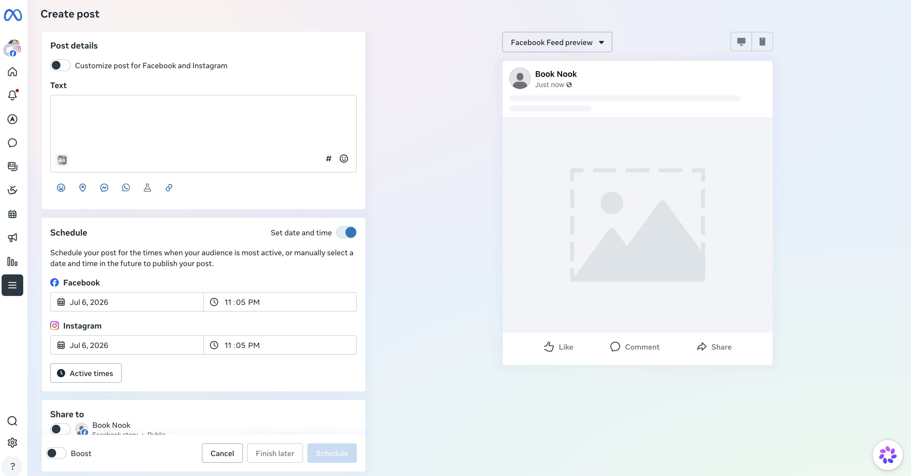
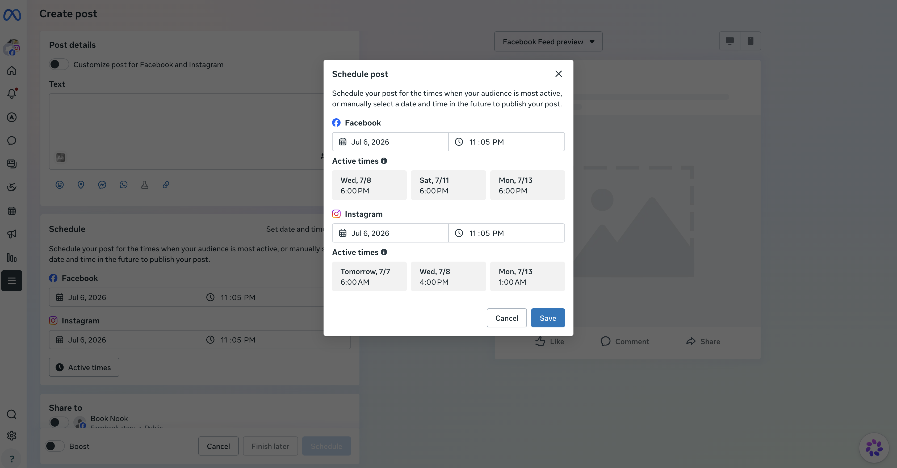

How one catch before launch protected user trust, validated a name through research, and drove 85K+ weekly users to a feature that actually delivered what it promised.
Across two product teams, two platforms, and one hard deadline, a new scheduling feature was taking shape: a tool that would tell millions of businesses the optimal time to post on Facebook and Instagram. The cross-team plan to get it out the door quickly was to average both platforms' data into a single recommended time and call the feature "Smart Scheduler."
Neither decision held up under scrutiny. Averaging two platforms with different audience behavior into one number meant the "optimal" time wouldn't actually be optimal for either platform — a gap users would eventually notice and lose trust over. And "smart" was a loaded word: prior naming audits showed it signaled heavy machine-learning sophistication the feature didn't have, setting users up to expect more than the product could deliver.
Raised the averaging shortcut as a product-quality risk, not a content nitpick — once users noticed the recommended time wasn't optimal for either platform, the feature would lose credibility fast.
Advocated for scrapping the single averaged time in favor of two distinct, platform-specific recommendations — a heavier build on an already tight timeline, but the only version users could actually rely on.
Partnered with a UXR lead to design a two-part naming study, testing whether "Smart Scheduler" actually set the right expectations instead of relying on instinct alone.
Used round-one findings to shortlist five candidate names, tested them in round two, and landed on a name that was both accurate to the feature and didn't lose any of its appeal.
Active Times as it shipped — platform-specific recommendations for Facebook and Instagram, exactly as advocated for. The copy across both surfaces reflects the final naming and the honest, per-platform framing the feature needed to earn user trust.


Good content design isn't just writing the label on a button — it's refusing to let a product make a promise it can't keep. Catching the averaging shortcut meant looking past the immediate ask ("ship a number") to the underlying product claim ("this action is optimal for you") and asking whether that claim would survive contact with real users.
The naming work mattered just as much: not settling for instinct when a name carried real risk of overselling the product, and instead building the evidence — a structured study, a shortlist, a second round of research — to make the call defensible. That combination, protecting the user's trust in what a feature claims to do, then proving the language choice rather than guessing at it, is the same judgment that scales from a single feature name to a full product's content standards.